DAY06 – Interlaken → Luzern a Grimsel és Furka hágón át
A mérés automatikusan indul oldalnyitáskor, majd 5 mp múlva frissít.
A távolságok minden célpontnál frissülnek.
1. Interlaken (Start)
mérés: várakozás
távolság: —
Az Aare folyó hordalékkúpján kialakult település a Thuni- és a Brienzi-tó tektonikus süllyedékében fekszik. A pleisztocén eljegesedés által vájt U-alakú völgy aljzatát a folyami üledékfeltöltés osztotta két különálló tavi medencére. Történelmileg az 1133-ban alapított Ágoston-rendi kolostor köré szerveződött.
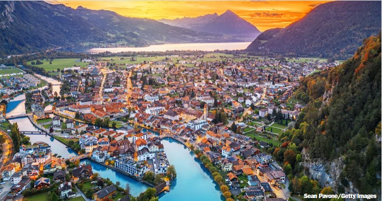
2. Staubbachfall
mérés: várakozás
távolság: —
A 297 méteres esésmagasságú vízesés a Lauterbrunnen-völgy meredek, glaciális erózió által kialakított mészkő sziklafaláról zúdul le. A vízhozam a kora nyári hóolvadás idején éri el maximumát, míg szárazabb időszakokban a levegőben finom permetté oszlik. A geológiai formáció a triász és jura kori tengeri üledékes kőzetek tektonikus megemelkedésének eredménye.
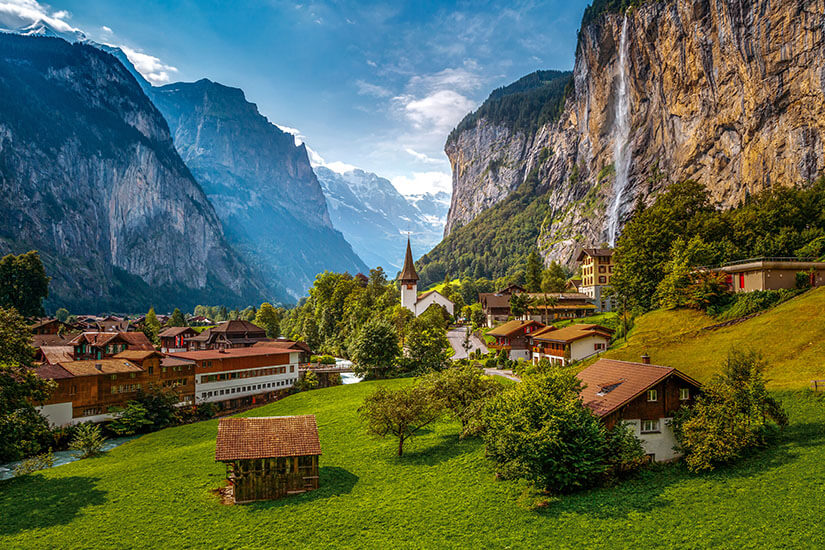
3. Brienzersee (Brienzi tó)
mérés: várakozás
távolság: —
A 14 km hosszú, jégkorszaki eredetű alpesi tó maximális mélysége 260 méter. Vízgyűjtő területe a környező gleccserekből származó, finom kőzetliszttel telített olvadékvizeket fogadja be, amely a tó jellegzetes türkizkék színét okozza. A víztest oligotróf, alacsony tápanyagtartalma miatt élővilága korlátozott.
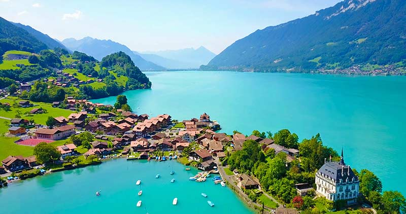
4. Sherlock Holmes Museum, Meiringen
mérés: várakozás
távolság: —
Meiringen település a Haslital régióban fekszik, történelmileg az alpesi hágókhoz vezető kereskedelmi útvonalak csomópontja. A geológiailag aktív zónában található közeli Reichenbach-vízesés a Hasli-Aare folyó meredek lépcsőin alakult ki. A helyszín az irodalomtörténetbe Sir Arthur Conan Doyle 1893-as novellája révén került be, mint történetének végpontja.
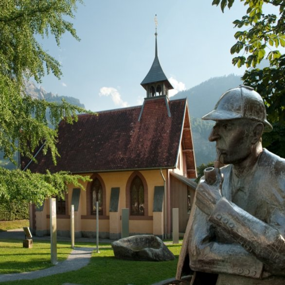
5. Grimsel hágó, 2164 méter
mérés: várakozás
távolság: —
A 2164 méter magasságban húzódó hágó az Aar-masszívum kristályos kőzetein, főként grániton és gneiszen halad keresztül. A terület vízválasztó vonalat képez az Északi-tenger és a Földközi-tenger vízgyűjtő medencéi között. A hágó környékén kiterjedt hidroelektrikus tározórendszer üzemel, amely a gleccserolvadék energiáját hasznosítja.
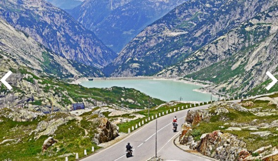
6. Furka hágó, 2429 méter
mérés: várakozás
távolság: —
A 2429 méteres tengerszint feletti magasságban fekvő hágó az Alpok fő gerincén, Uri és Valais kantonok határán helyezkedik el. Keleti oldalán található a Rhône-gleccser, amely az elmúlt 150 évben jelentős glaciális visszahúzódást mutat. Történelmi jelentőségét a 19. századi katonai védelempolitika és a stratégiai alpesi úthálózat kiépítése adja.
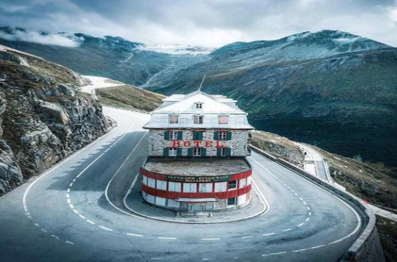
7. Teufelsbrücke (Ördög hídja)
mérés: várakozás
távolság: —
A Schöllenen-szoros a Reuss folyó által a gránitba vájt szűk, V-alakú völgy, amely a Gotthard-hágó északi megközelítésének legfőbb topográfiai akadálya volt. Ennek első áthidalása a 13. században történt meg fakonstrukciós, majd kőből épült hidak révén. A helyszín katonai és kereskedelmi szempontból egyaránt kulcsfontosságú átkelőként funkcionált.
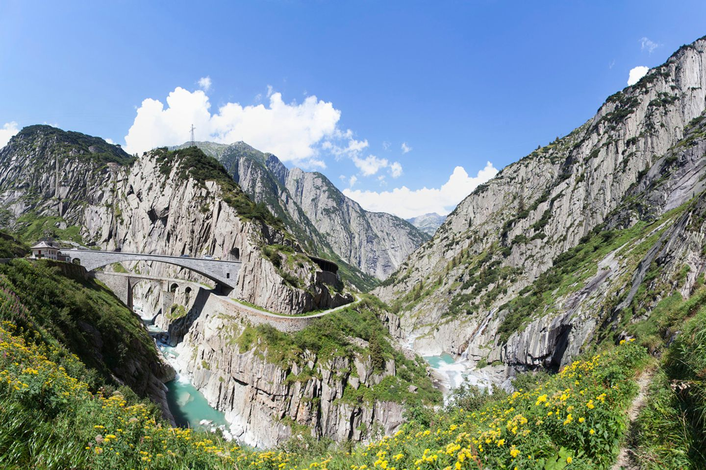
8. Wassen – St. Gallus templom
mérés: várakozás
távolság: —
Az 1734-ben felszentelt barokk stílusú St. Gallus templom egy kiemelkedő sziklaszirten helyezkedik el a Reuss-völgyben. A helyszín mérnöktörténeti jelentőségét a Gotthard-vasútvonal 1882-es megnyitása adja. A szintkülönbség leküzdésére épített spirális alagútrendszer miatt a vonaton utazók három különböző magasságból figyelhetik meg az épületet.
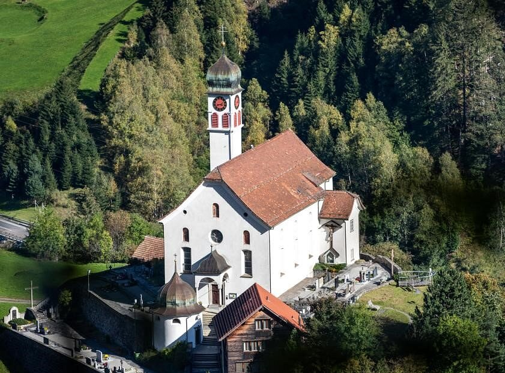
9. Vierwaldstättersee (Lucerni tó)
mérés: várakozás
távolság: —
A 114 km² kiterjedésű, komplex morfológiájú tó a Reuss-gleccser végmorénái által elgátolt medencében jött létre. A partvonalat meredek, jura és kréta kori mészkőhegyek határolják. A tó a Svájci Konföderáció történelmi magterülete, a partvidéken fekvő négy őskanton szövetsége képezte az államalakulat alapját.
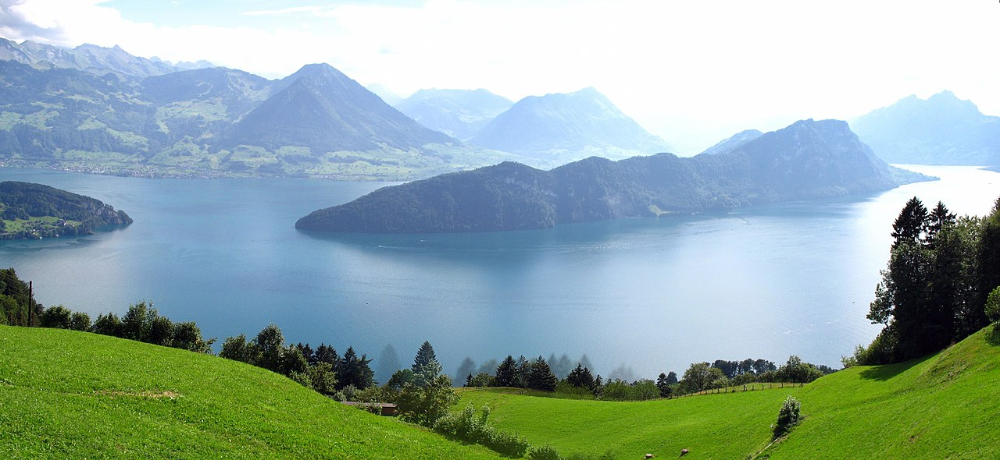
10. Tellskapelle
mérés: várakozás
távolság: —
A kápolna a Vierwaldstättersee keleti partján, a Tellsplatte nevű abráziós sziklateraszon épült. A történelmi feljegyzések szerint az első épületet 1388-ban emelték ezen a helyen, a Tell Vilmos legendakörhöz kapcsolódóan. A jelenlegi, 1879-ben emelt struktúrát történelmi eseményeket ábrázoló freskók díszítik.
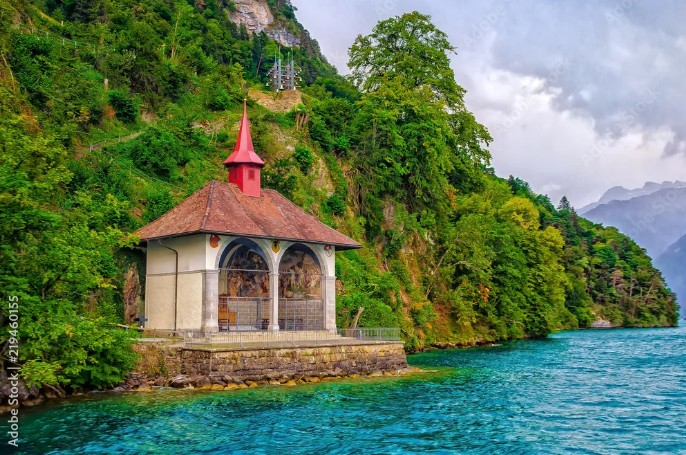
11. Glockenspiel Tellsplatte
mérés: várakozás
távolság: —
A 2001-ben átadott, 37 harangból álló elektromechanikus harangjáték a turisztikai infrastruktúra modern kiegészítése. A szerkezet az alpesi időjárási viszonyoknak ellenálló bronzötvözetből készült harangokat alkalmaz. Akusztikai elhelyezése a tó vizének hangvisszaverő képességét használja ki a fizikai hangzás felerősítésére.
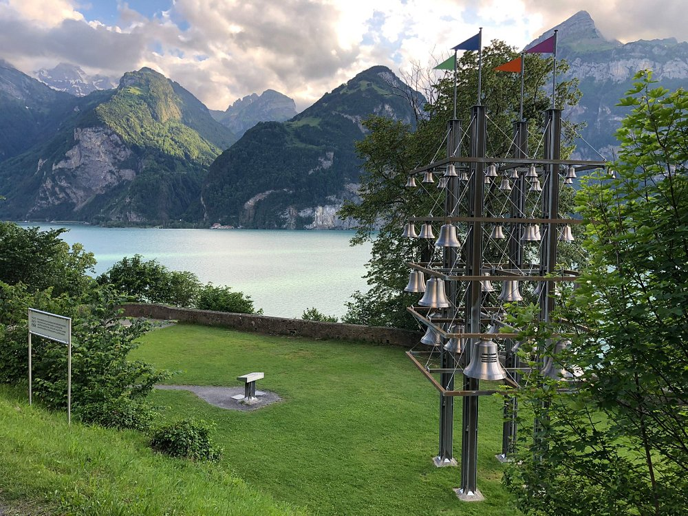
12. Schwyz
mérés: várakozás
távolság: —
A Mythen-hegycsoport meredek mészkőszirtjei alatt fekvő település a Svájci Konföderáció egyik alapító kantonjának székhelye. Itt őrzik az 1291-es Szövetségi Levél eredeti pergamenjét, amely a kantonok közötti kölcsönös védelmi paktumot rögzíti. Az óváros építészete a 16-17. századi patríciusházakon keresztül jeleníti meg a korabeli társadalomstruktúrát.
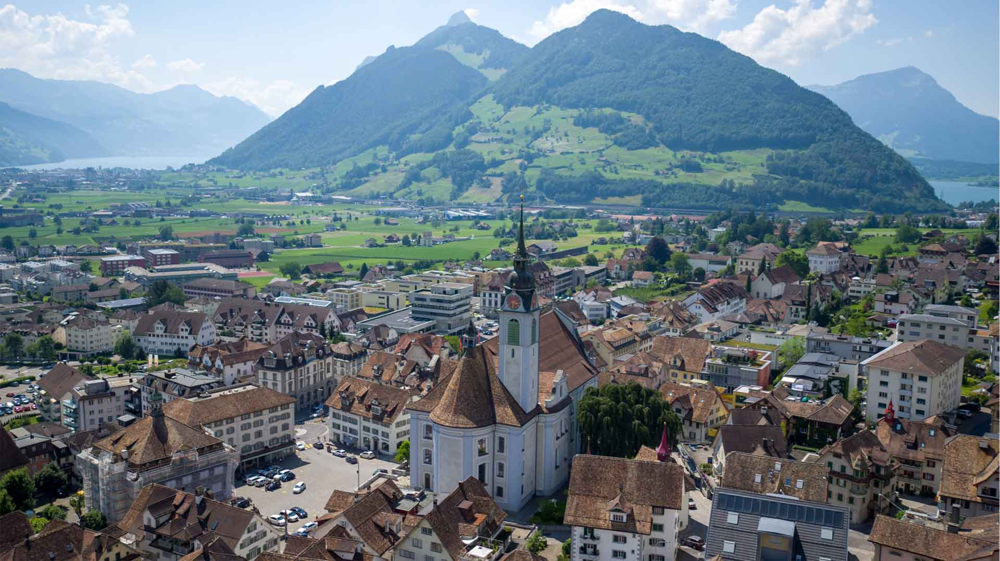
13. Camping International Lido Luzern
mérés: várakozás
távolság: —
A kemping a Luzerni-tó pleisztocén üledékes partvonalán elhelyezkedő logisztikai pont. Az infrastruktúra közvetlen hozzáférést biztosít a tó felszíni vízhálózatához és a városi közlekedési tengelyekhez. Geometriailag sík terepviszonyai a folyami hordaléklerakódás és mederfeltöltődés közvetlen eredményei.

14. Luzern
mérés: várakozás
távolság: —
Luzern a Reuss folyó kifolyásánál fekszik, logisztikai csomópontként kötve össze a Svájci-fennsíkot az Alpokkal. A 14. században épült Kapellbrücke és a Spreuerbrücke Európa legrégebbi fedett fahídjai közé tartoznak, eredetileg a város erődrendszerének részeként funkcionáltak. A városfejlődést a Gotthard-útvonal kereskedelmi tranzitja határozta meg.

Térkép